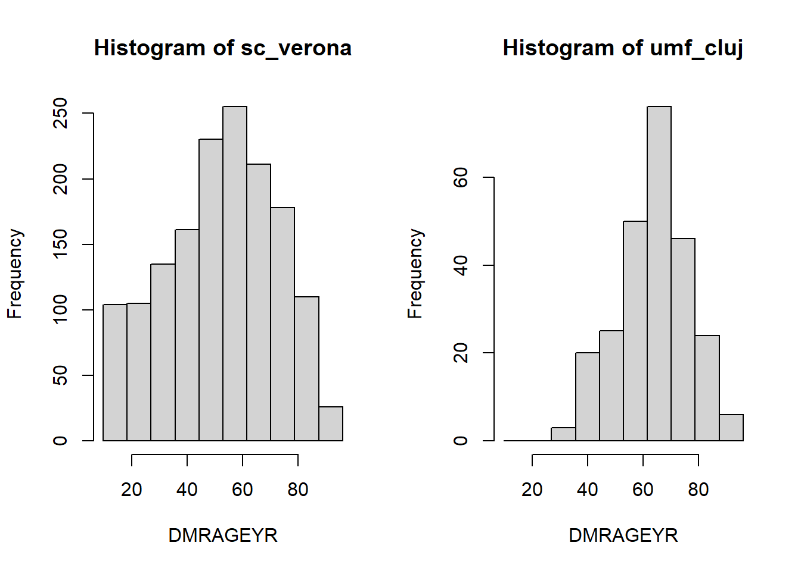
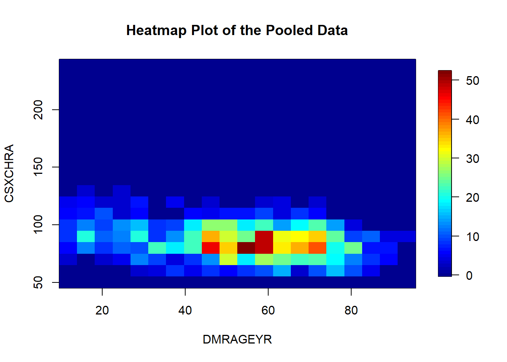

Part 3: Descriptive analysis
We have already checked that our data is compliant with the codebook. Now we can proceed with our analysis using the selected variables. To begin, we will perform a brief descriptive analysis, calculating some statistics, tables of contingence and doing some graphical visualizations.
Descriptive statistics
There is a collection of DataSHIELD functions to get the descriptive statistics of a variable. Those are the functions ds.var, ds.mean, ds.table among others. However, there is a function from the dsHelper package that automatically performs all the function calls on the background, being a much more user-friendly alternative. The only downside is that it requires the categorical variables to be factors, we can easily create a new factor variable and add it as a new column to our data.
ds.asFactor(input.var.name = "data$SMXAPA", newobj.name = "SMXAPA_factor")$all.unique.levels
[1] "No" "Yes"
$return.message
[1] "Data object <SMXAPA_factor> correctly created in all specified data sources"DSI::datashield.assign.expr(connections, "data", "cbind(data, SMXAPA_factor)")
dh.getStats(df = "data", vars = c("DMRAGEYR", "SMXAPA_factor"))$categorical
# A tibble: 4 x 10
variable cohort category value cohort_n valid_n missing_n perc_valid
<chr> <chr> <fct> <int> <int> <int> <int> <dbl>
1 SMXAPA_factor combined No 236 999 252 747 93.6
2 SMXAPA_factor combined Yes 16 999 252 747 6.35
3 SMXAPA_factor study1 No 236 999 252 747 93.6
4 SMXAPA_factor study1 Yes 16 999 252 747 6.35
# ... with 2 more variables: perc_missing <dbl>, perc_total <dbl>
$continuous
# A tibble: 2 x 15
variable cohort mean std.dev perc_5 perc_10 perc_25 perc_50 perc_75 perc_90
<chr> <chr> <dbl> <dbl> <dbl> <dbl> <dbl> <dbl> <dbl> <dbl>
1 DMRAGEYR study1 63.8 13.0 40.4 46.9 54.2 65 72 80.1
2 DMRAGEYR combined 63.8 13.0 40.4 46.9 54.2 65 72 80.1
# ... with 5 more variables: perc_95 <dbl>, valid_n <dbl>, cohort_n <dbl>,
# missing_n <dbl>, missing_perc <dbl>Graphical visualizations
There is a rich collection of functions to perform graphical visualization of the variables.
Boxplot
The boxplot is one of the newest plots available on DataSHIELD. It uses the ggplot2 library, providing lots of customization options.
ds.boxPlot(x = "data", variables = "DMRAGEYR")There are grouping options on the boxplot function which are very useful to have greater insights of the data. We can group using factor variables, so in this example we will use the previously created SMXAPA_factor variable.
ds.boxPlot(x = "data", variables = "DMRAGEYR", group = "SMXAPA_factor")We could even perform a second grouping using the argument group2 and stating another factor variable.
Histogram
To have an idea of the distribution of a variable we can use histograms.
ds.histogram("data$DMRAGEYR")Warning: study1: 1 invalid cells
$breaks
[1] 26.35662 33.27495 40.19328 47.11160 54.02993 60.94826 67.86658 74.78491
[9] 81.70324 88.62156 95.53989
$counts
[1] 0 11 14 36 29 54 51 31 17 5
$density
[1] 0.000000000 0.006359919 0.008094443 0.020814282 0.016767060 0.031221422
[7] 0.029486899 0.017923409 0.009828966 0.002890872
$mids
[1] 29.81579 36.73411 43.65244 50.57077 57.48909 64.40742 71.32575 78.24407
[9] 85.16240 92.08073
$xname
[1] "xvect"
$equidist
[1] TRUE
attr(,"class")
[1] "histogram"Scatter plot
DataSHIELD has a scatter plot functionality that outputs noise-affected data points, depending on the security configuration of the Opal, the noise levels can make this plot to be hugely distorted.
ds.scatterPlot(x = "data$DMRAGEYR", y = "data$LBXSC3SIHn", datasources = connections)[1] "Split plot created"Heatmap plot
In a similar fashion than the scatter plot, we can visualize a two dimensional distribution of the points but in this case by density.
ds.heatmapPlot(x = "data$DMRAGEYR", y = "data$LBXSC3SIHn")study1: Number of invalid cells (cells with counts >0 and < nfilter.tab ) is 73
2-Dimensional contingency table
On the previous part, we have already seen that DataSHIELD has a function to calculate uni-dimensional contingency tables. This same function, can also be used for bi-dimensional contingency tables. It is important to note that this function is a little bit tricky sometimes, as it is quite common that the 2D contingency table has disclosive outputs, therefore we just get an error message.
ds.table("data$DMRAGEYR", "data$LBXSC3SIHn")
All studies failed for reasons identified below
Study 1 : Failed: at least one cell has a non-zero count less than nfilter.tab i.e. 3 $validity.message
[1] "All studies failed for reasons identified below"
$error.messages
$error.messages$study1
[1] "Failed: at least one cell has a non-zero count less than nfilter.tab i.e. 3"There are other variables that do produce valid non-disclosive results.
ctable <- ds.table("data$SMXCPA", "data$SMXSLA")$output.list$TABLES.COMBINED_all.sources_counts
Data in all studies were valid
Study 1 : No errors reported from this studyctable data$SMXSLA
data$SMXCPA No Yes NA
No 202 21 0
Yes 26 3 0
NA 0 0 747Fisher test
Given the calculated contingency table, we are now in the position to perform a Fisher’s exact test.
stats::fisher.test(ctable)
Fisher's Exact Test for Count Data
data: ctable
p-value < 2.2e-16
alternative hypothesis: two.sidedStudent t-test
We have two options to perform a t-test, and our choice will depend on whether we want to use pooled methods or we want to calculate the t-test on a single study server.
Pooled t-test
To perform a pooled t-test, we will use a collection of DataSHIELD functions to calculate the statistic.
\[t = \frac{\bar{x}_1 - \bar{x}_2}{\sqrt{\frac{s_1^2}{n_1} + \frac{s_2^2}{n_2}}}\]
Where:
- \(\bar{x}\) is the observed mean of the sample.
- \(s\) is the standard devuation of the sample.
- \(n\) is the sample size.
We will use the following code to perform this operations:
mean1 <- ds.mean("data$DMRAGEYR")$Mean.by.Study[1]
mean2 <- ds.mean("data$LBXSC3SIHn")$Mean.by.Study[1]
sd1 <- sqrt(ds.var("data$DMRAGEYR")$Variance.by.Study[1])
sd2 <- sqrt(ds.var("data$LBXSC3SIHn")$Variance.by.Study[1])
n1 <- ds.length("data$DMRAGEYR")[[1]] - ds.numNA("data$DMRAGEYR")[[1]]
n2 <- ds.length("data$LBXSC3SIHn")[[1]] - ds.numNA("data$LBXSC3SIHn")[[1]]
(mean1 - mean2) / sqrt(sd1^2/n1 + sd2^2/n2)[1] 46.00566You can expect to see a wrapper for this code on a future dsHelper release (dsHelper::dh.ttest('sample1', 'sample2').
Single study t-test
If we are not interested on using pooled functionalities, it is much simpler to perform a t-test.
DSI::datashield.aggregate(connections, "t.test(data$DMRAGEYR, data$LBXSC3SIHn)")$study1
Welch Two Sample t-test
data: data$DMRAGEYR and data$LBXSC3SIHn
t = 46.006, df = 312.25, p-value < 2.2e-16
alternative hypothesis: true difference in means is not equal to 0
95 percent confidence interval:
38.5088 41.9499
sample estimates:
mean of x mean of y
63.83200 23.60265 Analysis of variance (ANOVA)
A student is developing a DataSHIELD function to perform ANOVAs. You can expect it to be available in the following months, probably as part of the dsML package.